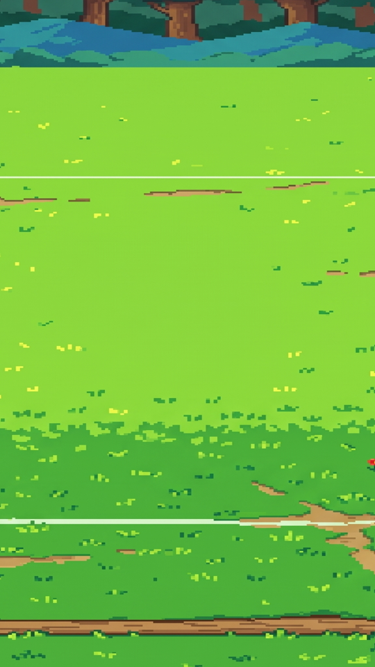
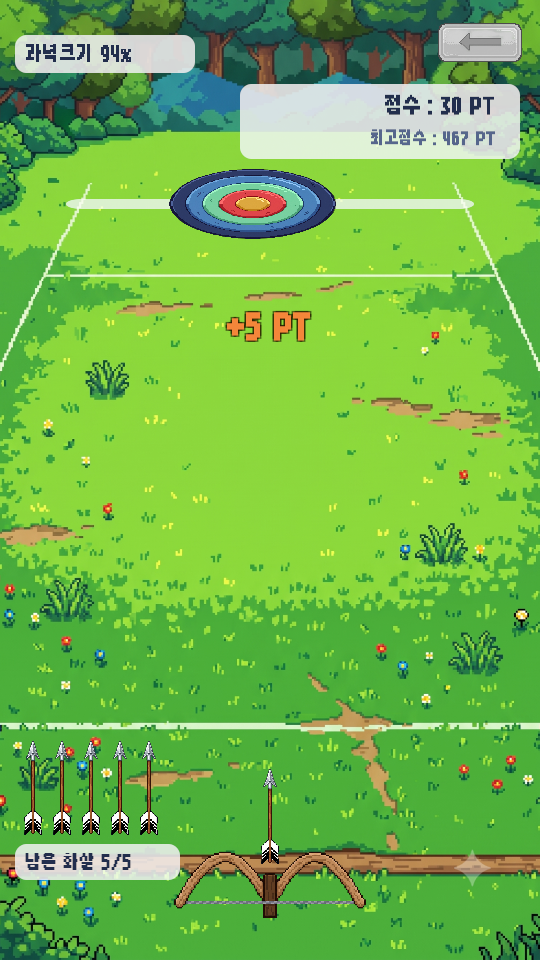
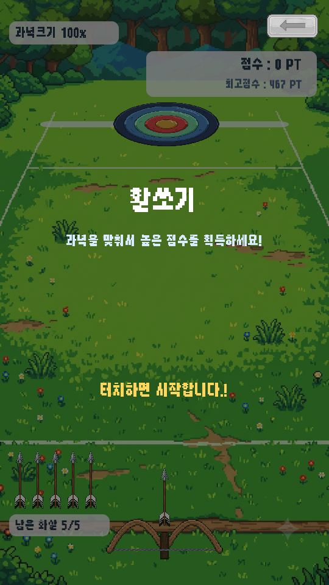
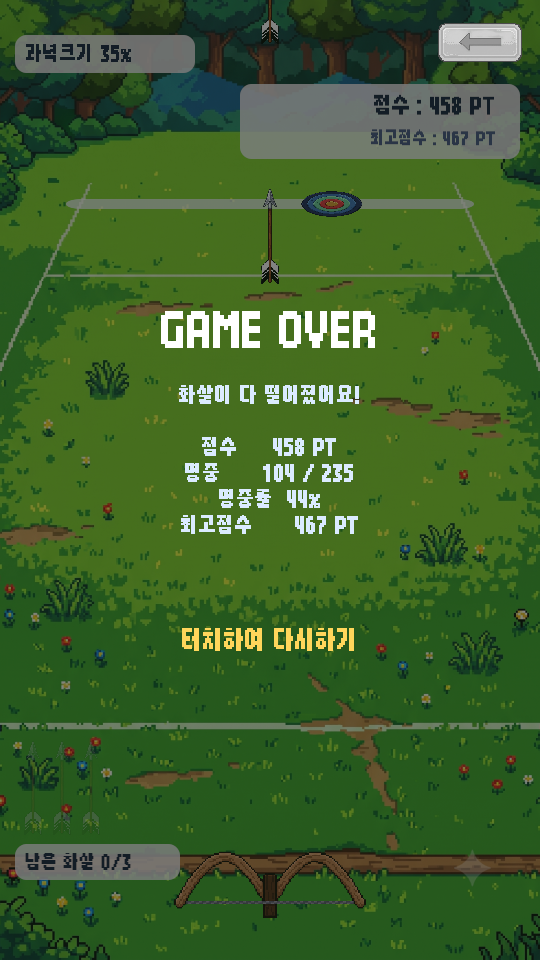

<title>활쏘기 배경 · 별명</title>
<meta charset="utf-8">
<style>
  :root{
    --bg:#f7f6f3; --card:#fff; --ink:#1c1b19; --muted:#6b6862;
    --line:#e3e0da; --accent:#c2410c; --ok:#15803d; --warn:#b45309;
  }
  @media (prefers-color-scheme:dark){:root:not([data-theme="light"]){
    --bg:#16151a; --card:#1f1e24; --ink:#eceaf0; --muted:#a3a0ab;
    --line:#33313b; --accent:#fb923c; --ok:#4ade80; --warn:#fbbf24;
  }}
  :root[data-theme="dark"]{
    --bg:#16151a; --card:#1f1e24; --ink:#eceaf0; --muted:#a3a0ab;
    --line:#33313b; --accent:#fb923c; --ok:#4ade80; --warn:#fbbf24;
  }
  body{background:var(--bg);color:var(--ink);font:16px/1.65 "Malgun Gothic","Segoe UI",system-ui,sans-serif;
       margin:0;padding:40px 20px 80px}
  main{max-width:880px;margin:0 auto}
  h1{font-size:28px;line-height:1.3;margin:0 0 6px;letter-spacing:-.02em}
  .sub{color:var(--muted);margin:0 0 36px;font-size:14px}
  h2{font-size:19px;margin:44px 0 14px;padding-bottom:8px;border-bottom:2px solid var(--line)}
  h3{font-size:15px;margin:26px 0 8px;color:var(--accent)}
  section{background:var(--card);border:1px solid var(--line);border-radius:12px;padding:4px 24px 24px;margin-bottom:8px}
  .tw{overflow-x:auto;margin:14px 0}
  table{border-collapse:collapse;width:100%;font-size:14px;min-width:460px}
  th,td{padding:7px 10px;text-align:left;border-bottom:1px solid var(--line);vertical-align:top}
  th{font-weight:600;color:var(--muted);font-size:12.5px;text-transform:uppercase;letter-spacing:.04em}
  tr:last-child td{border-bottom:none}
  code{background:var(--bg);border:1px solid var(--line);border-radius:4px;padding:1px 5px;font-size:13px;
       font-family:Consolas,"Cascadia Mono",monospace}
  ul{padding-left:20px} li{margin:6px 0}
  ol{padding-left:22px} ol li{margin:8px 0}
  .tag{display:inline-block;font-size:12px;padding:2px 9px;border-radius:99px;border:1px solid currentColor;
       font-weight:600;vertical-align:middle;white-space:nowrap}
  .ok{color:var(--ok)} .warn{color:var(--warn)}
  .note{border-left:3px solid var(--warn);background:var(--bg);padding:12px 16px;border-radius:0 8px 8px 0;margin:16px 0}
  .note p{margin:6px 0}
  .lead{font-size:17px}
  figure{margin:0}
  .shots{display:flex;gap:14px;flex-wrap:wrap;margin:18px 0}
  .shots figure{flex:1 1 200px;max-width:250px}
  .shots img{width:100%;display:block;border:1px solid var(--line);border-radius:8px}
  .shots figcaption{font-size:12.5px;color:var(--muted);margin-top:8px;text-align:center;line-height:1.5}
</style>

<main>
<h1>활쏘기 배경 · 별명</h1>
<p class="sub">심심할 때 하는 게임 &middot; 2026-09-11 밤 &middot; 잔디밭 배경에 맞춘 UI / 별명이 게임끼리 같은지 확인</p>

<section>
<h2>한 줄 요약</h2>
<p class="lead"><strong>배경은 비율을 바로잡고 글자마다 반투명 판을 깔았습니다.</strong>
<strong>별명은 원래 모든 게임이 같이 씁니다</strong> — 활쏘기에서 "불곰" 이 안 된 것은 게임이 아니라
<strong>폰과 에디터가 서로 다른 사람으로 취급되기 때문</strong>이었습니다.</p>
</section>

<section>
<h2>1. 잔디밭 배경 — 먼저 고친 것</h2>
<p>넣어 주신 그림(1536×2505, 세로형)이 <strong>옆으로 두 배쯤 퍼져</strong> 보였을 겁니다. 예전 배경은 가느다란 하늘색 띠라서
화면보다 넉넉하게 가로세로를 따로 늘렸는데, 진짜 그림에 그 방식을 쓰면 찌그러집니다.
이제 <strong>비율을 지킨 채 화면 위아래를 꽉 채웁니다</strong> — 위는 숲, 아래는 통나무가 딱 화면 끝에 옵니다.
요즘 폰(20:9)에서는 좌우가 조금 잘립니다.</p>
<div class="shots">
<figure><figcaption>예전 방식 그대로였다면 &mdash; 옆으로 퍼짐</figcaption></figure>
<figure><figcaption>지금 &mdash; 그림 비율 그대로</figcaption></figure>
</div>
</section>

<section>
<h2>2. 배경에 맞춘 UI 투명도</h2>
<p>예전 하늘색 배경에서는 글자를 그냥 얹어도 읽혔는데, 잔디밭 그림은 <strong>위쪽이 어두운 숲, 아래쪽이 꽃밭·통나무</strong>라 글자가 묻혔습니다.</p>
<div class="tw"><table>
<tr><th>무엇</th><th>전</th><th>후</th></tr>
<tr><td>과녁 크기 (왼쪽 위)</td><td>남색 글자만 — 숲에 묻힘</td><td><strong>반투명 흰 판</strong>(66%) 위에</td></tr>
<tr><td>남은 화살 (왼쪽 아래)</td><td>남색 글자만 — 꽃밭에 묻힘</td><td><strong>반투명 흰 판</strong>(66%) 위에</td></tr>
<tr><td>점수판 (오른쪽 위)</td><td>흰 판 72%</td><td>66% — <strong>세 판을 같은 투명도로</strong> 맞춰 한 벌로 보이게</td></tr>
<tr><td>시작 · 결과 화면의 막</td><td>남색 62% — 밝은 잔디 위에서 흰 글자가 흐림</td><td><strong>짙은 초록빛 검정 78%</strong> — 글자가 또렷, 배경은 은은하게 보임</td></tr>
<tr><td>과녁 레일</td><td>회청색 90%</td><td><strong>반투명 흰색 60%</strong> — 운동장에 그어진 흰 선과 어울리게</td></tr>
<tr><td>"+5 PT"</td><td>주황 글자만</td><td>짙은 테두리를 둘러 잔디 위에서도 보이게</td></tr>
</table></div>
<div class="shots">
<figure><figcaption>시작 화면</figcaption></figure>
<figure><figcaption>게임 중</figcaption></figure>
<figure><figcaption>결과 화면</figcaption></figure>
</div>
<p style="font-size:13.5px;color:var(--muted)">(전 모습은 <code>보고서_그림/0911c_*_전.png</code> — 하늘색 배경 시절 캡처입니다)</p>
<p>숫자를 더 옅게·짙게 하고 싶으시면 "판을 조금 더 투명하게" 처럼 말씀만 주세요. 값은 전부 한곳(<code>ArcherySceneBuilder</code> 위쪽)에 모여 있습니다.</p>
</section>

<section>
<h2>3. 별명 — 게임끼리는 이미 같습니다</h2>
<p class="lead"><strong>별명은 게임이 아니라 사람(기기)에게 하나 붙어 있습니다.</strong>
점프점프에서 정한 별명으로 활쏘기 · 앞으로 추가될 게임에서도 <strong>다시 묻지 않고</strong> 그대로 랭킹에 오릅니다.</p>

<h3>그런데 왜 활쏘기에서 "불곰" 이 안 됐나 — 서버를 직접 들여다본 결과</h3>
<div class="tw"><table>
<tr><th>기기</th><th>서버가 붙인 번호</th><th>별명</th></tr>
<tr><td><strong>폰</strong></td><td><code>uf1K…</code></td><td><strong>"불곰" 을 서버에 등록</strong> · 점프점프 1,920점</td></tr>
<tr><td><strong>에디터 (이 컴퓨터)</strong></td><td><code>51jd…</code></td><td>"불곰" 이 폰 안에만 적혀 있고 서버 등록은 <strong>거절됨</strong></td></tr>
</table></div>
<ol>
<li>폰에서 점프점프를 하시면서 폰이 <strong>"불곰" 을 먼저 서버에 잡았습니다.</strong></li>
<li>에디터에는 랭킹 서버를 붙이기 전(1단계)에 정해 두신 "불곰" 이 폰 안에만 적혀 있었습니다.</li>
<li>에디터에서 활쏘기를 끝내자 에디터가 그 "불곰" 을 서버에 등록하려 했는데, 이미 폰이 쓰고 있어서
    <strong>"이미 있는 별명입니다"</strong> 로 거절됐습니다. 그래서 서버의 활쏘기 랭킹이 비어 있습니다.</li>
</ol>
<p>로그인 없이 쓰는 방식(익명)이라, 서버는 <strong>폰과 에디터가 같은 사람인지 알 길이 없습니다.</strong>
실제 사용자는 폰 한 대로 하니 이 일을 겪지 않지만, 개발 중에 폰과 에디터를 오가면 이렇게 됩니다.</p>

<h3>지금 푸는 방법 (시험용)</h3>
<ul>
<li><strong>폰에서 치트</strong>(설정 창 빈 윗부분 5번)를 쓰시면 폰이 쥔 "불곰" 이 풀립니다. 그 뒤 에디터에서 한 판 하면 에디터가 "불곰" 을 잡습니다.</li>
<li>또는 <strong>에디터에서는 다른 별명</strong>(예: 불곰PC)을 쓰세요. 에디터에서 톱니바퀴 → [별명 바꾸기].</li>
</ul>

<h3>나중에 — 여러 기기에서 같은 사람으로 보려면</h3>
<p>폰을 바꾸거나 앱을 지웠다 깔아도 같은 별명·기록을 이어 가게 하려면 <strong>계정 로그인</strong>(예: 구글 플레이 게임즈)을 붙여야 합니다.
지금 구조에 덧붙일 수 있게 만들어 두었으니, 원하시면 말씀해 주세요. 출시에 꼭 필요한 것은 아닙니다.</p>

<h3>확인한 것</h3>
<div class="tw"><table>
<tr><th>무엇</th><th>결과</th></tr>
<tr><td>[서버] 한 사람이 두 번째 게임(앞으로 추가될 게임 역할)에 점수를 올리면 <strong>별명을 다시 묻지 않는다</strong></td><td><span class="tag ok">통과</span></td></tr>
<tr><td>[서버] 두 번째 게임 랭킹에도 <strong>같은 별명</strong>으로 나온다</td><td><span class="tag ok">통과</span></td></tr>
<tr><td>[서버] 별명을 바꾸면 <strong>두 게임의 점수 줄이 모두</strong> 새 별명으로 바뀐다</td><td><span class="tag ok">통과</span></td></tr>
<tr><td>[자체 점검] 로비의 모든 게임이 서버 규칙에 맞는 id 이고 이름 줄이 있다 (점프점프 · 활쏘기)</td><td><span class="tag ok">통과</span></td></tr>
</table></div>
<div class="note"><p><strong>앞으로 게임을 추가할 때 한 가지만 지키면 됩니다</strong> — 게임 id 를 <strong>영문 소문자 · 숫자 · <code>_</code></strong> 로만 지을 것
(예: <code>flappy</code>, <code>snake_2</code>). 서버가 이 모양만 받기 때문에, <code>Flappy-Bird</code> 처럼 지으면 그 게임만 점수가 조용히 안 올라갑니다.
<strong>자체 점검이 이것을 잡아 줍니다.</strong></p></div>
</section>

<section>
<h2>검증</h2>
<div class="tw"><table>
<tr><th>무엇</th><th>결과</th></tr>
<tr><td>컴파일 + 씬 4장</td><td><span class="tag ok">오류 0</span></td></tr>
<tr><td>자체 점검 44 → <strong>46건</strong></td><td><span class="tag ok">전부 통과</span></td></tr>
<tr><td>서버 점검 19 → <strong>21건</strong> (여러 게임 · 같은 별명 3건 추가, 시험 계정 삭제까지)</td><td><span class="tag ok">전부 통과</span></td></tr>
<tr><td>점프점프 · 활쏘기 플레이테스트</td><td><span class="tag ok">정상</span></td></tr>
<tr><td>APK</td><td><span class="tag ok">성공</span> 56.8 MB (배경 그림으로 +3 MB) · 테스트 광고</td></tr>
</table></div>
</section>
</main>
